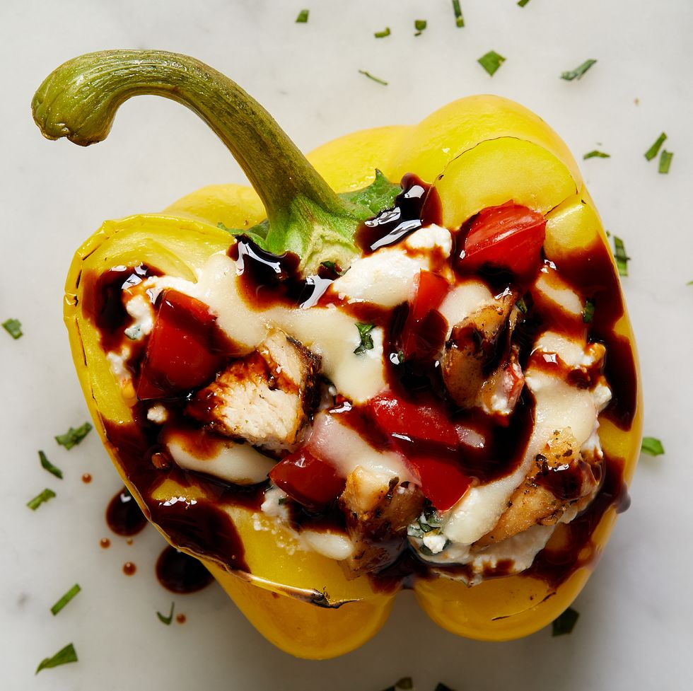

Chicken Caprese Stuffed Peppers

Description
For this recipe, we decided to fit everything you love about our caprese chicken—chicken breasts,
cherry tomatoes, mozzarella, balsamic — all into these gorgeous
stuffed peppers for a satisfying (and eye-catching) meal.
Ingredients
- 1 tbsp. extra virgin olive oil
- 1 lb. boneless skinless chicken breast
- 1 tsp. italian seasoning
- Kosher salt
- Freshly ground black pepper
- 2 cupscherry tomatoes, halved
- 2 1/2 cups shredded mozzarella
- 3/4 cups ricotta
- 1/3 cups shredded fresh basil
- 2 cloves garlic, minced
- 4 bell peppers, halved
- 1/2 cups low sodium chicken broth
- Balsamic glaze
Steps
- Preheat oven to 350º. In a large skillet over medium heat, heat oil.
Add chicken and season with Italian seasoning, salt and pepper.
Cook until chicken is golden and no longer pink, 8 minutes per side.
Transfer to a cutting board and let rest 5 minutes, then dice.
- In a large bowl, stir together cherry tomatoes, cooked chicken,
1 1/2 cups mozzarella, ricotta, basil, and garlic and season with salt and pepper.
- Stuff tomato mixture into peppers and sprinkle tops with remaining 1 cup mozzarella.
Pour chicken broth into baking dish (to help the peppers steam) and cover with foil.
- Bake until peppers are tender and cheese melty, 40 to 45 minutes.
- Garnish with more basil, drizzle with balsamic glaze, and serve.